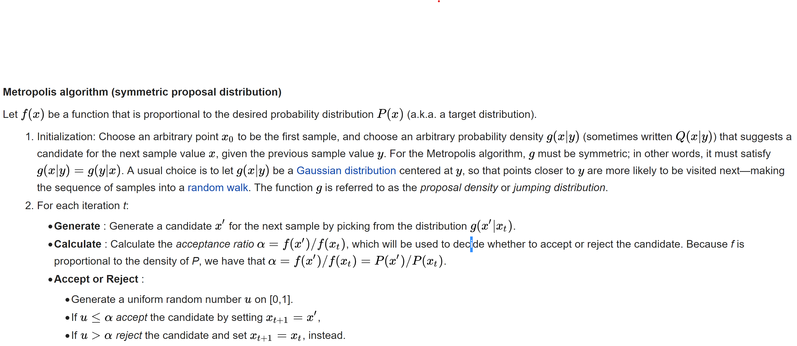
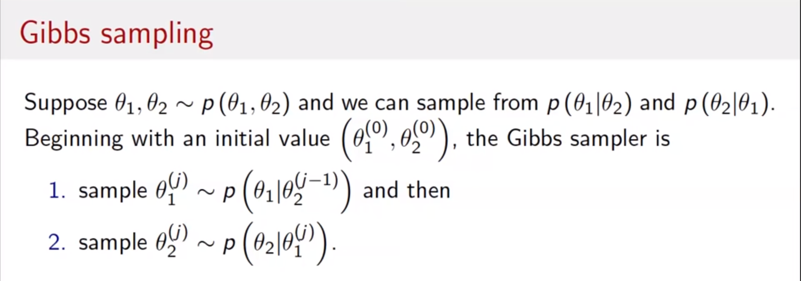
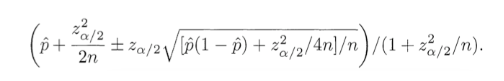

P1
Description:
Write a function to calculate all possible assignment vectors of 2n users, where n users are assigned to group 0 (control), and n users are assigned to group 1 (treatment).
Solution:
We First look at how to print all possible combinations of r elements in a given array of size n.
Given an array of size n, generate and print all possible combinations of r elements in array. For example, if input array is {1, 2, 3, 4} and r is 2, then output should be {1, 2}, {1, 3}, {1, 4}, {2, 3}, {2, 4} and {3, 4}.
Following are two methods to do this.
Method: define a helper function, the input is the data we’d like to get our element from, and A is a list containing the elements which are already used.
When len(data)+len(A)<n, we cannot take any sample from the list. Otherwise, we can write recursive function to generate every possible result.
python code:
1 | def permute(data,n): |
output:
1 | [[1, 2], [1, 3], [1, 4], [2, 3], [2, 4], [3, 4]] |
P2
Description:
实现二叉树的层次遍历及按层输出的两种方法 （大数据开发岗面试题)
Solution:
二叉树的层次遍历即从上往下、从左至右依次打印树的节点。
其思路就是将二叉树的节点加入队列，出队的同时将其非空左右孩子依次入队，出队到队列为空即完成遍历。
python code:
1 | class Node: |
output:
P3
Description:
一亿条数据找出前1000条最大的数据
Solution:
- 选择排序法：维护一个1000个元素的数组，然后依次向后搜索，如果后面出现的元素比这1000个元素的最小值要大，则替换之，搜索过一遍之后得到的就是top 1000。
- 分治法：类似于mapreduce的想法。将1亿个数据分成100份，每份100万个数据，找到每份数据中最大的1000个，最后在剩下的100*1000个数据里面找出最大的1000个。
- 最小堆：先拿10000个数建堆，然后一次添加剩余元素，如果大于堆顶的数（10000中最小的），将这个数替换堆顶，并调整结构使之仍然是一个最小堆，这样，遍历完后，堆中的10000个数就是所需的最大的10000个。建堆时间复杂度是O（mlogm），算法的时间复杂度为O（nmlogm）（n为10亿，m为10000）。
P4
Description:
List the differences between supervised and unsupervised learning.
Follow up:
- What are the supervised learning algorithms?
- What are the unsupervised learning algorithms?
- What is selection bias? From sampling point of view.
- What is reinforcement learning?
Solution:
Supervised learning as the name indicates a presence of supervisor as teacher. Basically supervised learning is a learning in which we teach or train the machine using data which is well labeled that means some data is already tagged with correct answer. After that, machine is provided with new set of examples(data) so that supervised learning algorithm analyses the training data(set of training examples) and produces an correct outcome from labeled data.
Supervised learning classified into two categories of algorithms:
Classification: A classification problem is when the output variable is a category, such as “Red” or “blue” or “disease” and “no disease”.
Regression: A regression problem is when the output variable is a real value, such as “dollars” or “weight”.
Unsupervised learning is the training of machine using information that is neither classified nor labeled and allowing the algorithm to act on that information without guidance. Here the task of machine is to group unsorted information according to similarities, patterns and differences without any prior training of data.
Unsupervised learning classified into two categories of algorithms:
Clustering: A clustering problem is where you want to discover the inherent groupings in the data, such as grouping customers by purchasing behavior.
Association: An association rule learning problem is where you want to discover rules that describe large portions of your data, such as people that buy X also tend to buy Y.
Supervised learning algorithms:
Decision Trees: A decision tree is a decision support tool that uses a tree-like graph or model of decisions and their possible consequences, including chance-event outcomes, resource costs, and utility. Take a look at the image to get a sense of how it looks like.
Naive Bayes Classification: Naive Bayes classifiers are a family of simple probabilistic classifiers based on applying Bayes’ theorem with strong (naive) independence assumptions between the features. The featured image is the equation — with P(A|B) is posterior probability, P(B|A) is likelihood, P(A) is class prior probability, and P(B) is predictor prior probability.
Ordinary Least Squares Regression: If you know statistics, you probably have heard of linear regression before. Least squares is a method for performing linear regression. You can think of linear regression as the task of fitting a straight line through a set of points. There are multiple possible strategies to do this, and “ordinary least squares” strategy go like this — You can draw a line, and then for each of the data points, measure the vertical distance between the point and the line, and add these up; the fitted line would be the one where this sum of distances is as small as possible.
Logistic Regression: Logistic regression is a powerful statistical way of modeling a binomial outcome with one or more explanatory variables. It measures the relationship between the categorical dependent variable and one or more independent variables by estimating probabilities using a logistic function, which is the cumulative logistic distribution.
Ensemble Methods: Ensemble methods are learning algorithms that construct a set of classifiers and then classify new data points by taking a weighted vote of their predictions. The original ensemble method is Bayesian averaging, but more recent algorithms include error-correcting output coding, bagging, and boosting.
Unsupervised learning algorithms:
Clustering: K-Means Clustering – clustering your data points into a number (K) of mutually exclusive clusters. A lot of the complexity surrounds how to pick the right number for K; Hierarchical Clustering – clustering your data points into parent and child clusters. You might split your customers between younger and older ages, and then split each of those groups into their own individual clusters as well; Probabilistic Clustering – clustering your data points into clusters on a probabilistic scale.
Data Compression: Principal Component Analysis (PCA) – finds the linear combinations that communicate most of the variance in your data; Singular-Value Decomposition (SVD) – factorizes your data into the product of three other, smaller matrices.
Selection bias is the bias introduced by the selection of individuals, groups or data for analysis in such a way that proper randomization is not achieved, thereby ensuring that the sample obtained is not representative of the population intended to be analyzed.[1] It is sometimes referred to as the selection effect. The phrase “selection bias” most often refers to the distortion of a statistical analysis, resulting from the method of collecting samples. If the selection bias is not taken into account, then some conclusions of the study may not be accurate.
In statistics, sampling bias is a bias in which a sample is collected in such a way that some members of the intended population are less likely to be included than others. Selection from a specific real area. For example, a survey of high school students to measure teenage use of illegal drugs will be a biased sample because it does not include home-schooled students or dropouts.
P5
Description:
How would you test if survey responses were filled at random by certain individuals, as opposed to truthful selections?
Solution:
Often, people designing questionnaires will ask the same question in different ways. One well-known issue is that people will give different age answers if you ask “How old are you?” and “What is your birth date?” The latter have been found to be more accurate.
Another type of pattern is to answer all the questions with one answer on multiple choice questionnaires. One way to detect this is to have some questions that are reverse coded. Then someone who answers (say) “nearly all the time” to both “I am happy” and “I am sad” may be suspect.
You can also look at correlations among the questions and then identify people who have very different patterns.
Of course, none of these are fool-proof.
P6
Description:
Suppose you send out a survey to gather more information about the population, but the response rate is very low (less than 1% responded). How might you analyze the data you collected?
Solution:
How Response Rate Affects A Survey？ Although non-response bias’ impact on results cannot easily be quantified as sampling error can, response rate can be used as one way to gauge the potential for non-response bias. The higher the response rate of a survey, the lower the risk of non-response bias.
Look at the example below to see the effect that non-response bias might have on survey results. Let’s say you conduct three surveys of the same sample of ten students hoping to learn the percentage that received A’s in a recent class。
hat we are going to do is employing questionnaires that should consider estimation strategies, which is designed to minimize nonresponse, like asking the right questions, sending the surveys at the right time, use Bayesian analysis to do sensitive problem investigation.
P7
Description:
what is p-hacking?
Solution:
The problem of p-hacking occurs when someone unduly influences the data collection process or statistical analyses performed in order to produce a statistically significant result. This also can happen if some data is left out deliberately in order to force a statistically significant result to occur.
P8
Description:
what is p-value?
Solution:
The correct interpretation of a p-value is the probably that a certain event or more extreme will occur assuming that some given null hypothesis is true.
Formally, the p-value is the probability of seeing a particular result (or greater) from zero, assuming that the null hypothesis is true. If ‘null hypothesis is true’ is tricking you up, just think instead, ‘assuming we had really run an A/A’ Test.
P9
Description:
what is statistical power?
Solution:
Power is the probability of rejecting the null hypothesis when, in fact, it is false.
P10
Description:
What is reinforcement learning? Tell me about an algorithm is typical in reinforcement learning. How is it different from supervised, semi-supervised, or unsupervised learning?
Solution:
Reinforcement learning is an area of Machine Learning. Reinforcement. It is about taking suitable action to maximize reward in a particular situation. It is employed by various software and machines to find the best possible behavior or path it should take in a specific situation. Reinforcement learning differs from the supervised learning in a way that in supervised learning the training data has the answer key with it so the model is trained with the correct answer itself whereas in reinforcement learning, there is no answer but the reinforcement agent decides what to do to perform the given task. In the absence of training dataset, it is bound to learn from its experience.
P11
Description:
Tell me about the differences between a PCA and ICA.
Solution:
Principal component analysis (PCA) is a statistical procedure that uses an orthogonal transformation to convert a set of observations of possibly correlated variables (entities each of which takes on various numerical values) into a set of values of linearly uncorrelated variables called principal components.
ICA is good at solving blind source problem. In signal processing, independent component analysis (ICA) is a computational method for separating a multivariate signal into additive subcomponents. This is done by assuming that the subcomponents are non-Gaussian signals and that they are statistically independent from each other. ICA is a special case of blind source separation. A common example application is the “cocktail party problem” of listening in on one person’s speech in a noisy room.
P12
Description:
What is the metropolis hasting algorithm? What is Gibbs Sampling algorithm? What are differences between them?
Solution:
- metropolis-hasting:
What we do is to start out with some initial guess. And then we iterate over the scheme. So every iteration is taking one step in our domain. So the first thing I want to do is to sample from what’s called the proposal function q. What it will do is more like a random walk, it will generate a sample near this current point. It depends on the previous point where you are. So we have that. Then we take it into this right here. So what we are doing here is to compare the probability of the proposed point over the probability of the point we’re already at.

- gibbs Sampling

P13
Description:
Tell me about various MCMC algorithms, especially their strengths and weaknesses.
Solution:
We want to generate random draws from a target distribution. We then identify a way to construct a ‘nice’ Markov chain such that its equilibrium probability distribution is our target distribution.
If we can construct such a chain then we arbitrarily start from some point and iterate the Markov chain many times (like how we forecast the weather n times). Eventually, the draws we generate would appear as if they are coming from our target distribution.
We then approximate the quantities of interest (e.g. mean) by taking the sample average of the draws after discarding a few initial draws which is the Monte Carlo component.
There are several ways to construct ‘nice’ Markov chains (e.g., Gibbs sampler, Metropolis-Hastings algorithm).
P14
Description:
What is Naive Bayesian algorithm?
Solution:
P15
Description:
SQL interview questions:
Solution:
top 65 sql interview questions
P15
Description:
Explain, concisely, the law of large numbers and the central limit theorem.
Solution:
The Central Limit Theorem (CLT) is a statistical theory states that given a sufficiently large sample size from a population with a finite level of variance, the mean of all samples from the same population will be approximately equal to the mean of the population.
It tells us that, the Central Limit Theorem is exactly what the shape of the distribution of means will be when we draw repeated samples from a given population. Specifically, as the sample sizes get larger, the distribution of means calculated from repeated sampling will approach normality.
In probability theory, the law of large numbers (LLN) is a theorem that describes the result of performing the same experiment a large number of times. According to the law, the average of the results obtained from a large number of trials should be close to the expected value, and will tend to become closer as more trials are performed.
The LLN is important because it guarantees stable long-term results for the averages of some random events. For example, while a casino may lose money in a single spin of the roulette wheel, its earnings will tend towards a predictable percentage over a large number of spins. Any winning streak by a player will eventually be overcome by the parameters of the game. It is important to remember that the law only applies (as the name indicates) when a large number of observations is considered. There is no principle that a small number of observations will coincide with the expected value or that a streak of one value will immediately be “balanced” by the others (see the gambler’s fallacy).
P16
Description:
How would you build and test a metric to compare two users’ rankings of products on Amazon’s platform? For example, I am interested in knowing how to calculate a ranking score from ratings of a product. E.g., take the apple appstore. There are two products A and B. Both have same average rating but 100 reviewers have rated A whereas 1000 reviewers have rated B. Intuitively it seems B should be ranked higher than A (it has lower standard error in the mean). Is there an established formula to compare two items and determine which is better based on their ratings?
Solution:
WRONG SOLUTION #2: Score = Average rating = (Positive ratings) / (Total ratings)
Why it is wrong: Average rating works fine if you always have a ton of ratings, but suppose item 1 has 2 positive ratings and 0 negative ratings. Suppose item 2 has 100 positive ratings and 1 negative rating. This algorithm puts item two (tons of positive ratings) below item one (very few positive ratings). WRONG.
CORRECT SOLUTION: Score = Lower bound of Wilson score confidence interval for a Bernoulli parameter
Say what: We need to balance the proportion of positive ratings with the uncertainty of a small number of observations. Fortunately, the math for this was worked out in 1927 by Edwin B. Wilson. What we want to ask is: Given the ratings I have, there is a 95% chance that the “real” fraction of positive ratings is at least what? Wilson gives the answer. Considering only positive and negative ratings (i.e. not a 5-star scale), the lower bound on the proportion of positive ratings is given by:

P17
Description:
How would you design a test to filter out sponsored reviews from Amazon?
Solution:
I just ignore the number of stars. The stars are no matter to me, anyway, it matters to the seller. I read the CONTENT of the review, and form my opinion about both product & reviewer there. What’s useful to me is what they’re actually saying.
If someone only talks about the packaging, or the delivery time, or how it’s not as good as the one they had back in 1986, then I ignore the review. If someone talks about the actual features of the product, and evaluates the features I’ve been wondering about, then I pay attention.
Another way to do so is by keeping track on users’ (who left the reviews) profile. For example, if I create username and go give two positive reviews for a single company and never review again, it is likely that my reviews are fake, but there is some small chance that I am a real person who just only used Amazon one time and they would not want to upset me by deleting my profile and reviews.
P18
Description
Tell me how you would train a neural net to predict user ratings of a product on Amazon.
Solution
Based on reviews, train a LSTM neural net to predict the users’ ratings
P19
Description:
How would you know if one algorithm is better than the other?
Solution:
The standard way of comparing different algorithms is by comparing their complexity using Big O notation. In practice you would of course also benchmark the algorithms.
Accuracy, and accuracy time complexity trade-off。
P20
Description:
Suppose you are fitting a multiple linear regression model and you have some missing values in your outcomes. How would you deal with them?
Solution:
The idea of imputation is both seductive and dangerous.
Before jumping to the methods of data imputation, we have to understand the reason why data goes missing.